Semua Artikel Blog
Inspirasi dan panduan terbaik untuk petualangan alam Anda
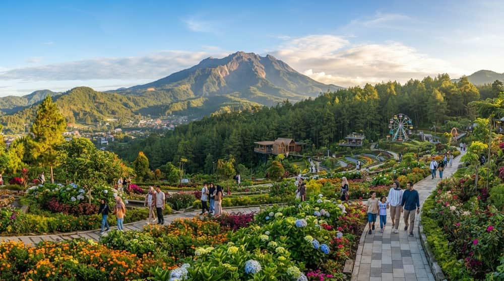
Rekomendasi Wisata Sekitar Baloga Batu untuk Liburan
Maksimalkan waktu kunjungan Anda di Kota Batu! Ini deretan destinasi seru di sekitar Baloga yang wajib masuk daftar kunjungan.
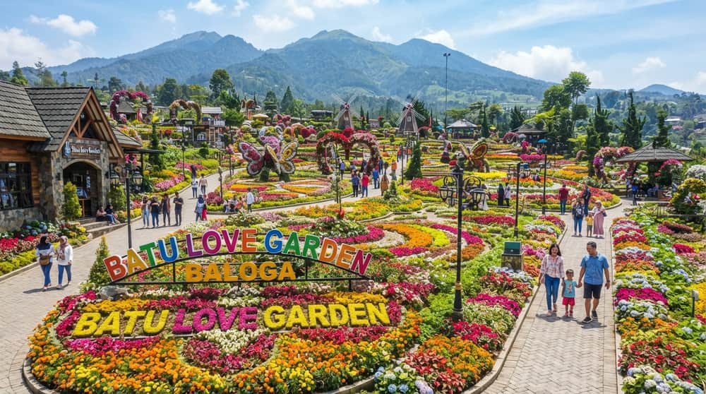
Harga Tiket dan Jam Buka Baloga Wisata Batu Terbaru
Berencana mengunjungi Batu Love Garden? Cek daftar harga tiket masuk dan jam operasional terkininya di sini sebelum memulai perjalanan wisata Anda!
Apa Itu Baloga? Profil Wisata Baru Batu Love Garden
Cari tahu lebih dalam tentang pesona Batu Love Garden. Taman edukasi bunga terlengkap yang sedang hits di kalangan wisatawan keluarga.
Wisata Baru Batu 2026, Ini Rekomendasi Destinasi Terkininya
Bosan dengan tempat wisata yang itu-itu saja? Intip referensi wisata terbaru di Batu yang memadukan rekreasi alam, spot Instagramable, dan edukasi.
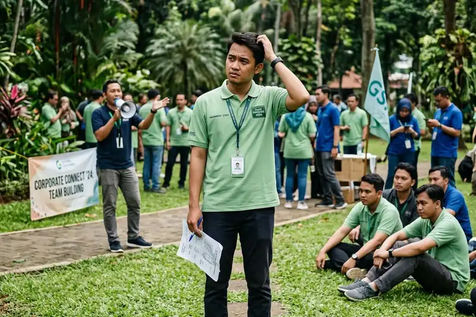
Kesalahan Umum dalam Outbound Onboarding Karyawan Baru
Menyelenggarakan outbound onboarding tanpa rencana yang matang bisa berujung pada kegagalan. Pelajari kesalahan umumnya di sini dan cegah sebelum terlambat!
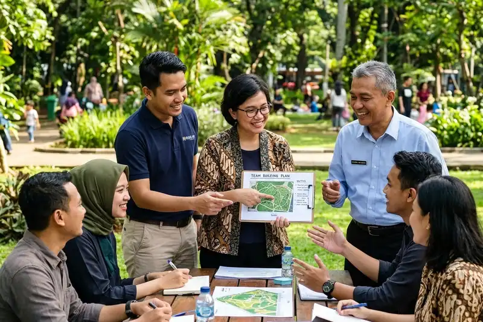
Langkah Menyusun Program Outbound Onboarding Karyawan Baru
Ingin program orientasi karyawan yang tidak membosankan? Berikut panduan menyusun rancangan outbound onboarding yang jitu dan terstruktur.
Manfaat Outbound bagi Onboarding Karyawan Baru
Karyawan baru cepat betah dan langsung klop dengan budaya kerja? Cari tahu sederet manfaat ajaib outbound untuk program onboarding di sini.

Team Building: Outbound sebagai Program Onboarding Karyawan Baru yang Efektif
Jangan biarkan karyawan baru canggung di pojok meja! Jadikan masa perkenalan mereka penuh aksi dan kolaborasi nyata melalui program outbound onboarding.
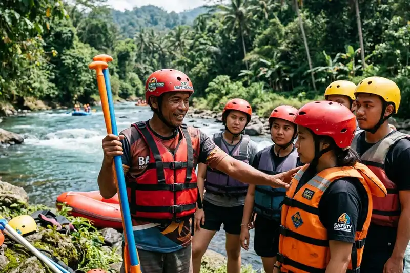
Perlengkapan dan Keselamatan Rafting untuk Pemula
Baru pertama kali menjajal arung jeram? Ketahui apa saja alat yang wajib dipakai dan aturan keselamatan esensial di sungai.
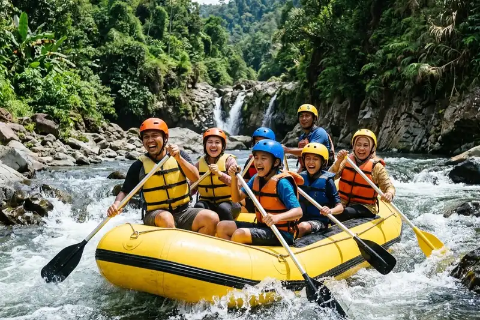
Manfaat Rafting bagi Kesehatan Fisik dan Mental
Bukan sekadar bersenang-senang basah-basahan! Rafting punya segudang dampak positif bagi otot, jantung, hingga kelegaan jiwa.
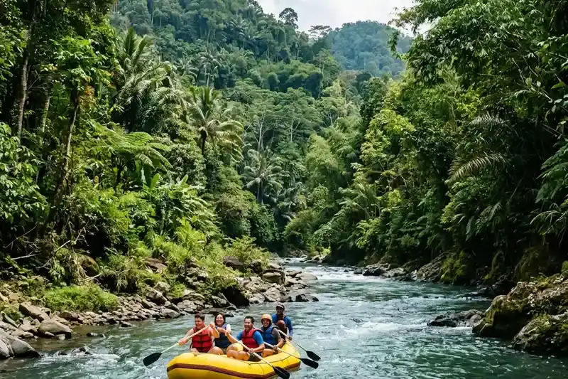
Arti Rafting dan Sejarah Singkatnya
Tahukah Anda bahwa rafting dulunya bukan untuk rekreasi? Pelajari makna dan kisah panjang arung jeram hingga jadi sepopuler sekarang.
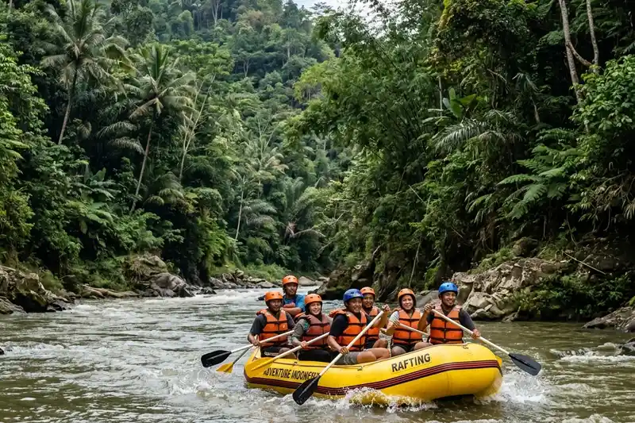
Rafting Artinya Apa? Ini Definisi Lengkapnya
Sering dengar kata rafting tapi belum paham betul maksudnya? Yuk, pelajari seluk-beluk olahraga ekstrem sekaligus wisata alam yang seru ini.
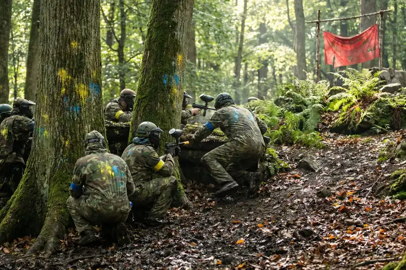
Manfaat Outbound bagi Produktivitas Tim UMKM
Apakah investasi untuk acara team building sepadan? Simak dampak besarnya terhadap soliditas dan kinerja tim skala kecil atau startup.
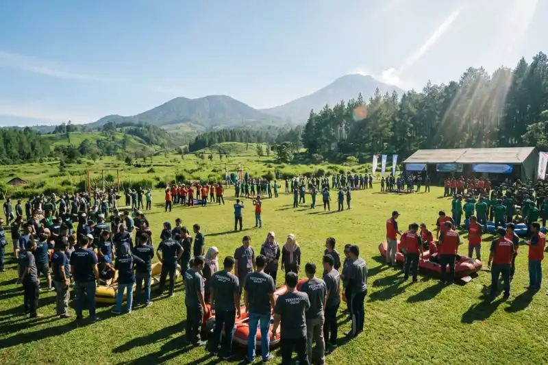
Ide Games Outbound Murah tapi Tetap Seru untuk Tim
Tidak perlu sewa alat mahal! Gunakan ide permainan kreatif ini untuk menghidupkan suasana outbound tim kerja Anda.
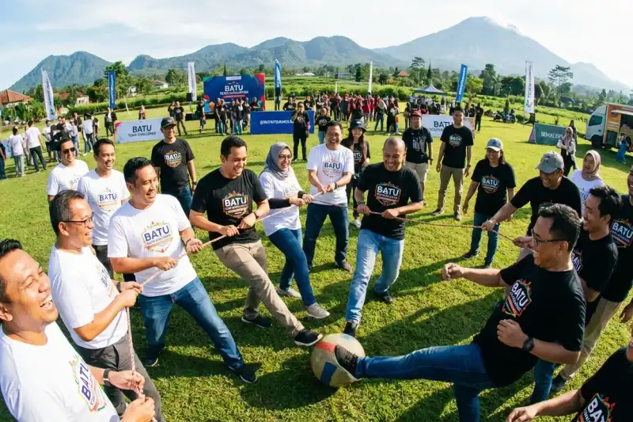
Cara Menyusun Anggaran Outbound Terbatas untuk Bisnis Kecil
Panduan praktis mengatur dana team building agar tidak membengkak di luar rencana. Sempurna bagi pemilik startup atau UMKM!

Outbound Hemat untuk UMKM dan Startup dengan Anggaran Terbatas
Anggaran terbatas bukan lagi halangan. Pelajari trik jitu merancang outbound seru dan mengedukasi bagi perusahaan berskala kecil dan startup.
Level Permainan Paintball dari Pemula hingga Mahir
Dari sekadar bersembunyi hingga memimpin skuad dengan taktik tingkat tinggi, pahami tingkatan keahlian dalam dunia war game paintball.
Paintball untuk Team Building, Ini Manfaatnya
Bawa regu Anda keluar dari rutinitas kantor. Bangun kekompakan dan latih pengambilan keputusan di bawah tekanan melalui serunya permainan paintball!
Perbedaan Paintball dan Airsoft Gun, Mana Lebih Cocok
Panduan lengkap memilih war game yang paling cocok untuk acara team building atau rekreasi Anda berikutnya berdasarkan tingkat impact dan keseruannya.
Paintball Adalah: Pengertian dan Perbandingan dengan War Game Lain
Berkenalan lebih jauh dengan olahraga rekreasi memacu adrenalin satu ini, mulai dari cara bermain, perlengkapan, hingga perbedaannya dengan airsoft gun dan gelbi.
Tips Keselamatan Bermain Paintball di Lapangan
Keamanan selalu menjadi prioritas utama. Kenali aturan krusial yang wajib dipatuhi setiap pemain sebelum masuk ke zona pertempuran paintball.
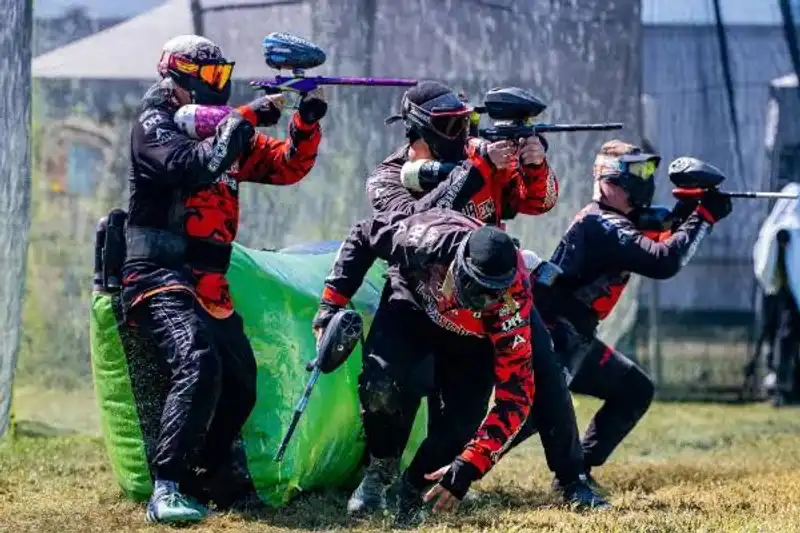
Perlengkapan Wajib Bermain Paintball bagi Pemula
Panduan lengkap mengenal peralatan dasar paintball sebelum terjun ke arena pertempuran pertama Anda. Keamanan adalah prioritas utama!
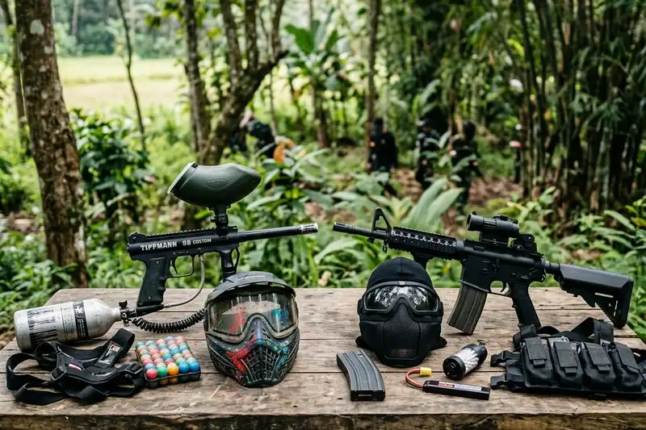
Perbandingan Paintball dan Airsoft Gun Secara Lengkap
Kupas tuntas perbedaan dua war game paling populer ini untuk menemukan yang paling sesuai dengan gaya main dan kebutuhan team building Anda.
Paintball Adalah: Pengertian dan Perbandingan dengan War Game Lain
Berkenalan lebih jauh dengan olahraga rekreasi memacu adrenalin satu ini, mulai dari cara bermain, perlengkapan, hingga perbedaannya dengan airsoft gun.
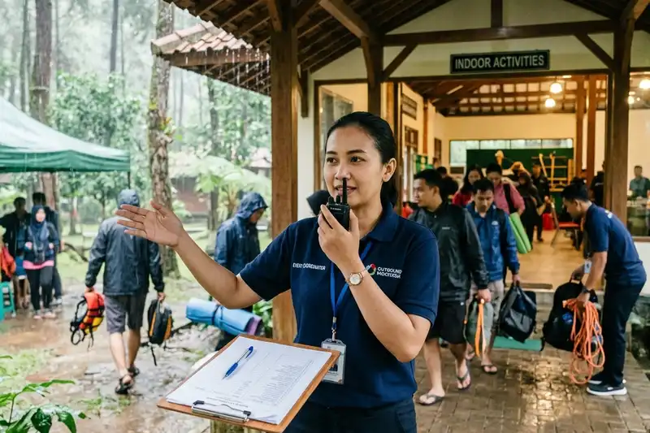
Cara Mengelola Perubahan Rencana Outbound Secara Mendadak
Panduan praktis bagi penyelenggara acara untuk beralih dari aktivitas outdoor ke indoor dengan cepat, tenang, dan tetap menyenangkan.
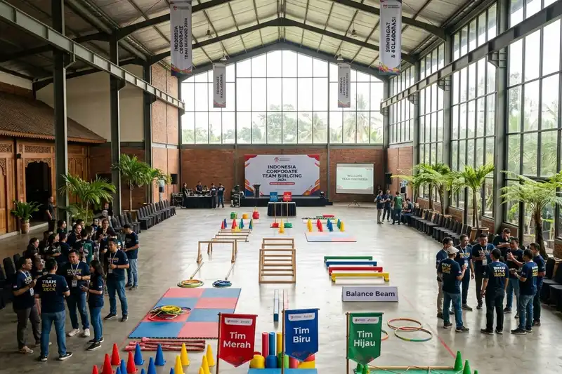
Tips Memilih Venue Indoor untuk Outbound Musim Hujan
Pastikan rencana cadangan Anda sempurna dengan panduan memilih venue berfasilitas memadai dan berkapasitas lega untuk acara team building.
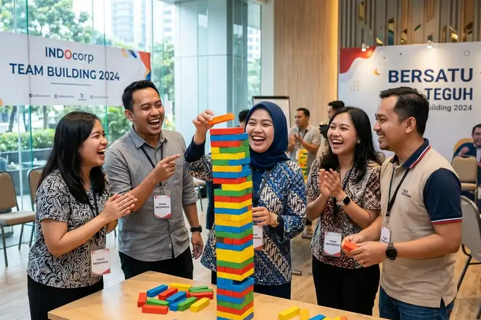
Ide Permainan Outbound Indoor yang Seru dan Interaktif
Kumpulan referensi permainan team building dalam ruangan yang tetap pecah dan memupuk kebersamaan layaknya beraktivitas di alam terbuka.
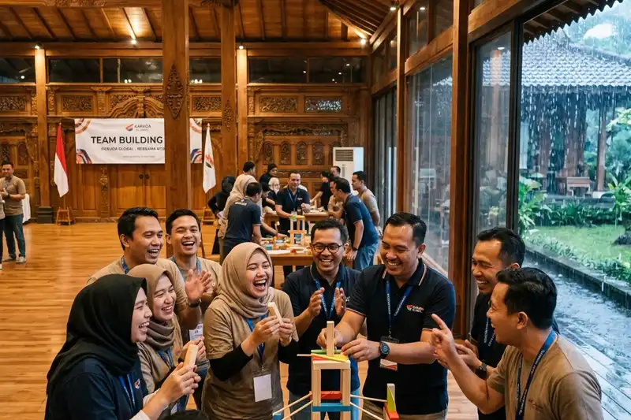
Outbound Musim Hujan: Rencana Cadangan Indoor Tetap Seru
Jangan biarkan hujan menggagalkan acara Anda. Pelajari cara menyiapkan alternatif kegiatan indoor yang sama menantangnya.
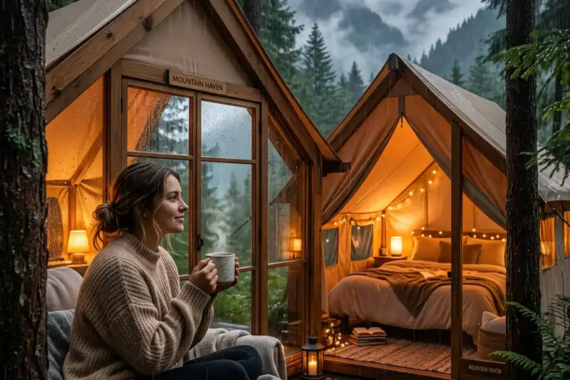
Rekomendasi Destinasi Wisata Batu Berdasarkan Musim
Panduan memilih destinasi di Batu menyesuaikan kondisi musim demi memaksimalkan kenyamanan liburan Anda.
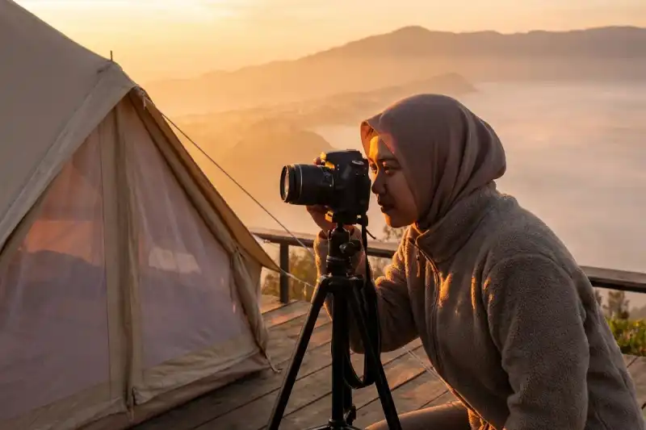
Tips Memilih Waktu Terbaik Berkunjung ke Wisata Batu
Rencanakan perjalanan Anda dengan strategi cerdas untuk menghindari keramaian, mendapatkan cuaca sempurna, dan menekan anggaran akomodasi.
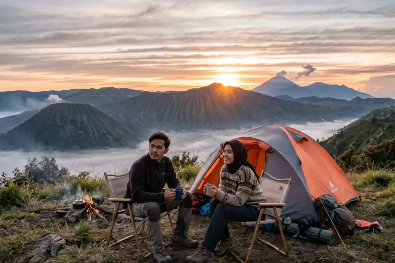
Event Musiman Batu: Jadwal dan Tips Kunjungan Terbaik
Ketahui kapan waktu paling ideal untuk berlibur, menghadiri festival lokal, dan menikmati cuaca cerah di dataran tinggi Batu.

Kalender Event Wisata Batu: Panduan Lengkap Sepanjang Tahun
Susun itinerary perjalanan Anda lebih sempurna dengan panduan jadwal festival, musim agrowisata, dan puncak keramaian di Kota Batu.
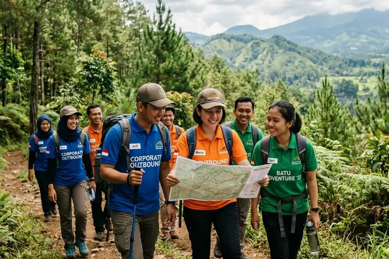
Outbound Alam Batu Malang untuk Team Building Perusahaan
Manfaatkan pesona alam dataran tinggi Batu sebagai arena pembentukan karakter, kepemimpinan, dan kerja sama tim perusahaan Anda.
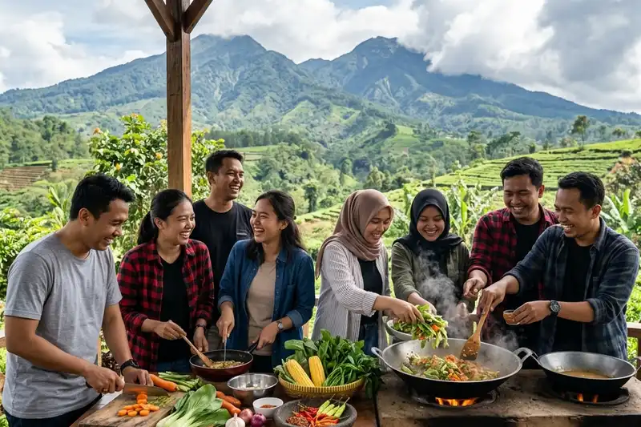
Outbound Kuliner Kolaboratif di Batu Malang untuk Tim
Aktivitas memasak bersama di alam terbuka yang dirancang khusus untuk melatih komunikasi, pembagian peran, dan penyelesaian masalah bagi perusahaan Anda.
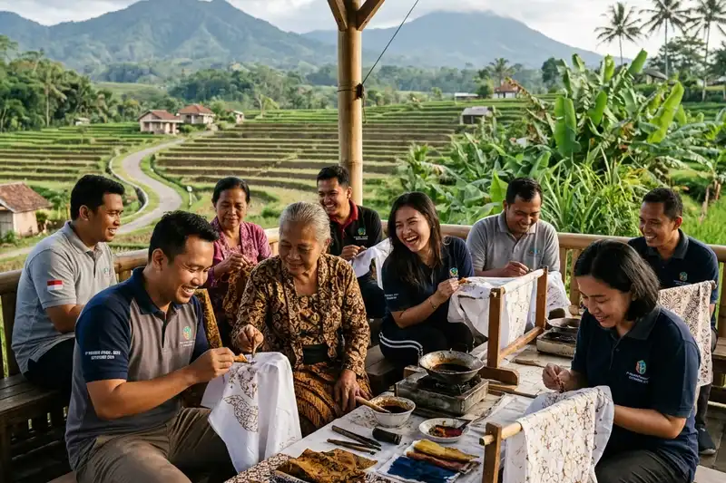
Ide Outbound Unik Berbasis Seni Lokal di Batu Malang
Rasakan pengalaman team building yang berbeda melalui aktivitas melukis, membatik, hingga seni pertunjukan bersama seniman asli Kota Batu.
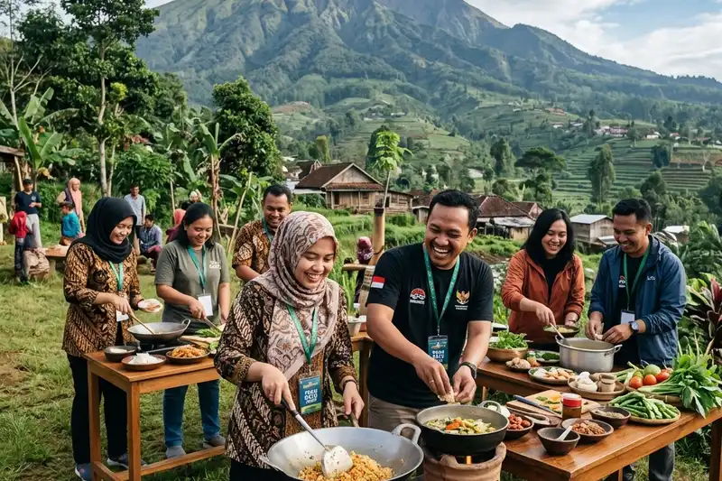
Team Building Anti-Mainstream di Batu Malang
Hadirkan pengalaman kerja sama tim yang lebih bermakna melalui eksplorasi seni, budaya, dan kuliner khas dataran tinggi Batu.
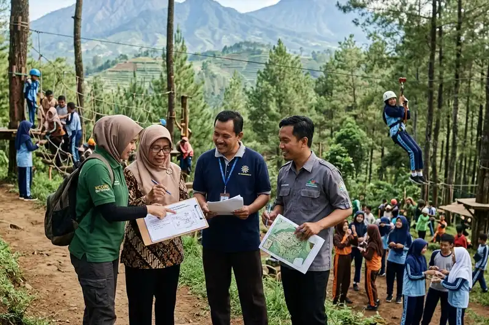
Tips Merancang Kegiatan Outbound Sekolah Berbasis Kurikulum
Panduan praktis bagi guru dan panitia sekolah untuk menyusun acara alam yang terintegrasi langsung dengan capaian pembelajaran akademik siswa.
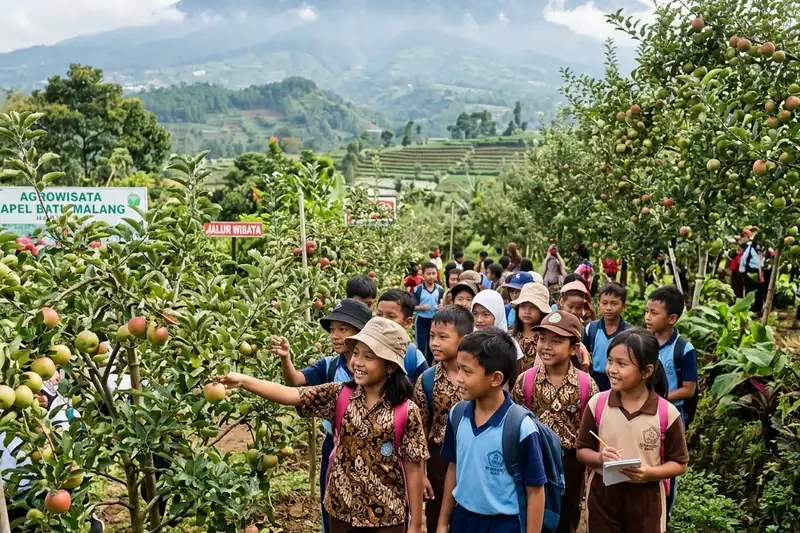
Rekomendasi Wisata Edukasi Malang untuk Outbound Sekolah
Pilihan destinasi study tour dan outbound sekolah di Malang yang menawarkan pengalaman belajar nyata tentang alam, sains, dan geografi.
Manfaat Outbound Edukasi bagi Perkembangan Siswa
Bukan sekadar bermain-main di alam! Kegiatan outbound yang dirancang khusus mampu menguatkan aspek kognitif, afektif, dan sosial peserta didik.
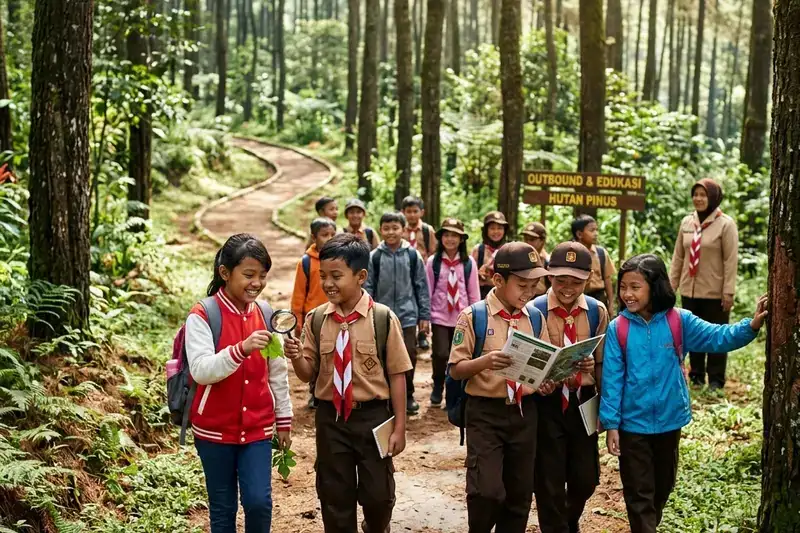
Outbound Sekolah Edukatif yang Terhubung Kurikulum
Ciptakan kegiatan alam terbuka yang menyenangkan namun tetap memperkuat pemahaman akademik dan karakter bagi siswa.
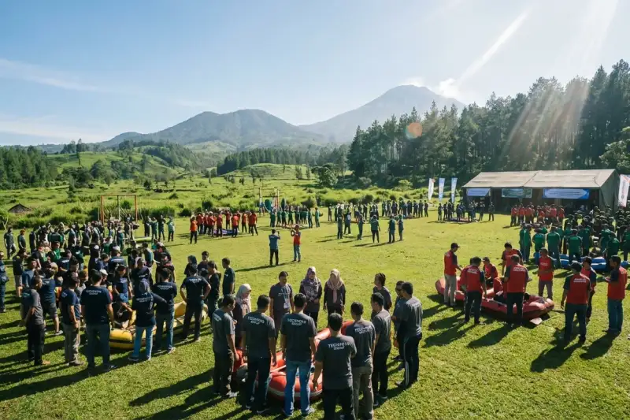
Tips Menyusun Rundown Outbound Singkat dan Efektif
Ketahui rahasia menyusun jadwal kegiatan gathering yang padat, penuh tawa, dan tetap berdampak maksimal meski waktunya terbatas.
Outbound Tim Remote: Cara Efektif Perkuat Kebersamaan
Jadikan momen tatap muka yang langka menjadi kesempatan emas mempererat komunikasi antaranggota tim kerja jarak jauh.
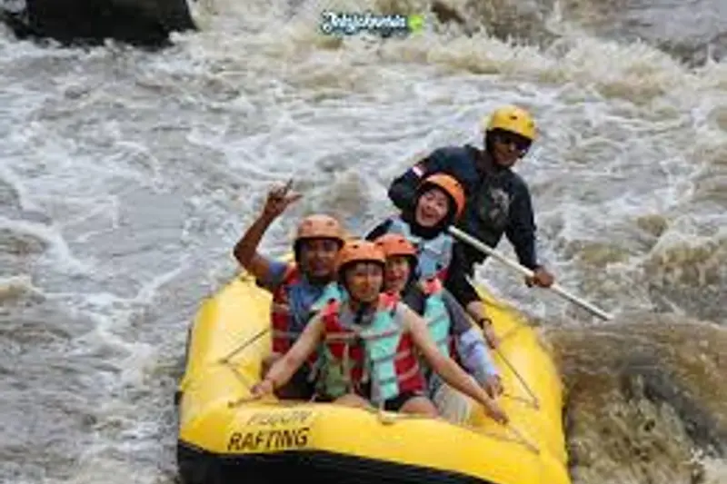
Apa Perbedaan Outbound Hybrid dengan Outbound Tim Remote Sepenuhnya
Pahami perbedaan mendasar dari kegiatan outbound untuk tim kerja hybrid versus tim yang remote sepenuhnya.
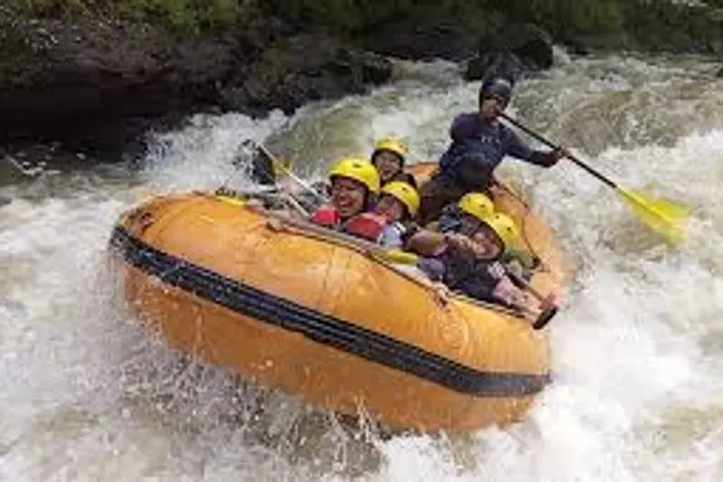
Outbound Setengah Hari untuk Tim Kerja Hybrid
Outbound setengah hari adalah format padat yang efektif memperkuat kekompakan tim hybrid tanpa membuang banyak waktu kerja produktif.

Panduan Memilih Perlengkapan Airsoft Gun untuk Pemula
Baru pertama kali main airsoft? Simak panduan memilih kacamata pelindung, pakaian, hingga replika yang tepat sebelum bermain.
Perbedaan Airsoft Gun dan Paintball yang Perlu Diketahui
Ketahui perbedaan airsoft gun dan paintball dari jenis peluru, dampak tembakan, hingga gaya bermain untuk menentukan pilihan yang tepat.
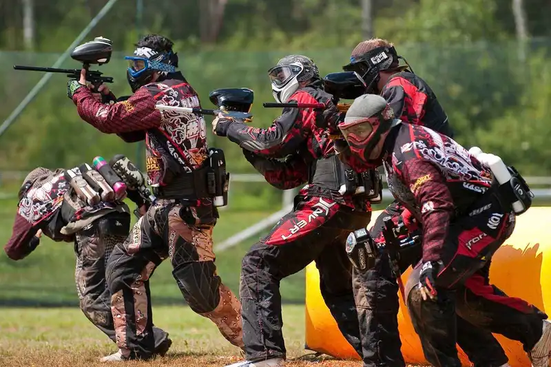
Airsoft Gun: Alternatif War Game yang Lebih Ringan dari Paintball
Airsoft gun adalah alternatif war game dengan peluru BB plastik yang lebih ramah pemula dengan risiko benturan yang lebih kecil dibanding paintball.
Kesalahan Umum Saat Menyewa Paintball dan Solusinya
Jangan sampai anggaran bengkak! Pahami kesalahan umum saat menyewa paintball dan solusinya sebelum booking paket.
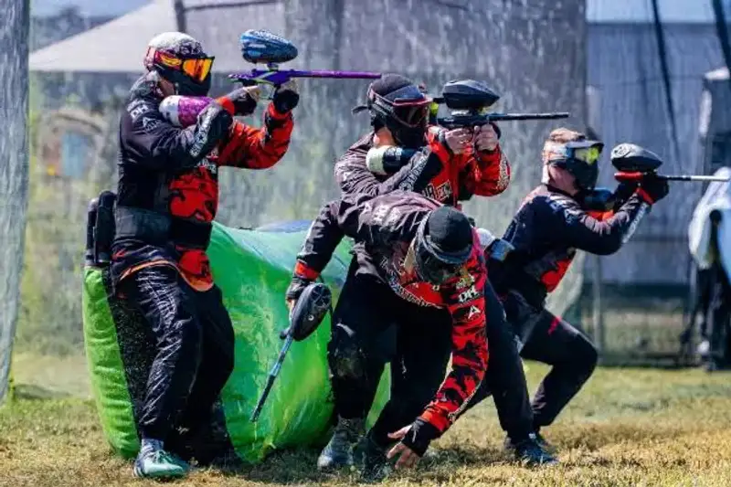
Cara Memilih Vendor Outbound Paintball yang Tepat
Memilih vendor outbound paintball yang tepat memerlukan perhatian pada standar keselamatan, perlengkapan, dan transparansi harga.
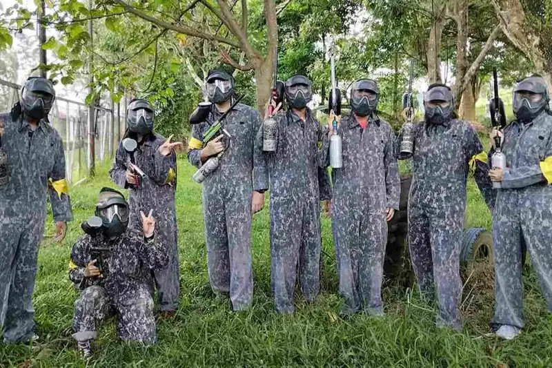
Faktor Penentu Harga Paintball yang Wajib Diketahui
Faktor penentu harga paintball meliputi jumlah peluru, jenis marker, lokasi lapangan, durasi bermain, dan layanan tambahan.
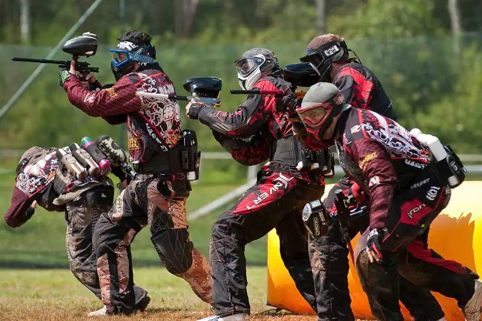
Harga Paintball: Kisaran Biaya dan Faktor yang Mempengaruhinya
Harga paintball dipengaruhi oleh kombinasi jumlah peluru, perlengkapan, lokasi, dan jasa pendampingan.
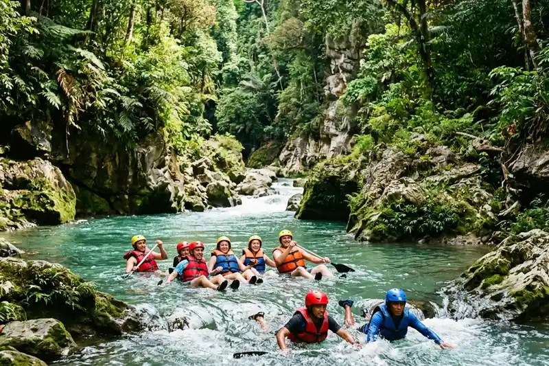
Body Rafting Adalah: Pengertian, Risiko, dan Persiapannya
Body rafting adalah aktivitas menyusuri arus sungai secara langsung dengan tubuh dibantu pelampung, tanpa perahu karet.
Rafting Artinya Apa? Ini Penjelasan dan Asal Katanya
Rafting artinya menyusuri sungai berarus deras menggunakan perahu karet, berasal dari kata bahasa Inggris "raft".
Arung Jeram: Pengertian, Grade, dan Bedanya dari Rafting
Arung jeram adalah istilah Indonesia untuk menyusuri sungai berarus deras, yang secara umum sama dengan rafting.
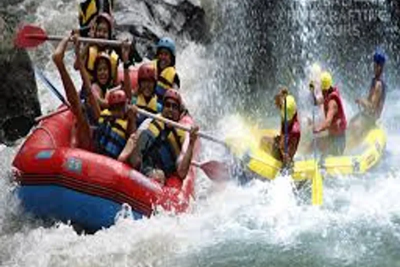
Rafting Adalah: Ini Beda dengan Arung Jeram dan Body Rafting di Malang
Rafting adalah olahraga arus deras menggunakan perahu karet berawak. Pahami bedanya dengan arung jeram dan body rafting.
Level Kesulitan Jeram: Panduan Memilih Sesuai Keluarga
Level kesulitan jeram adalah klasifikasi tingkat tantangan arus sungai dalam kegiatan rafting, mulai dari kelas I yang tenang hingga kelas V ekstrem.
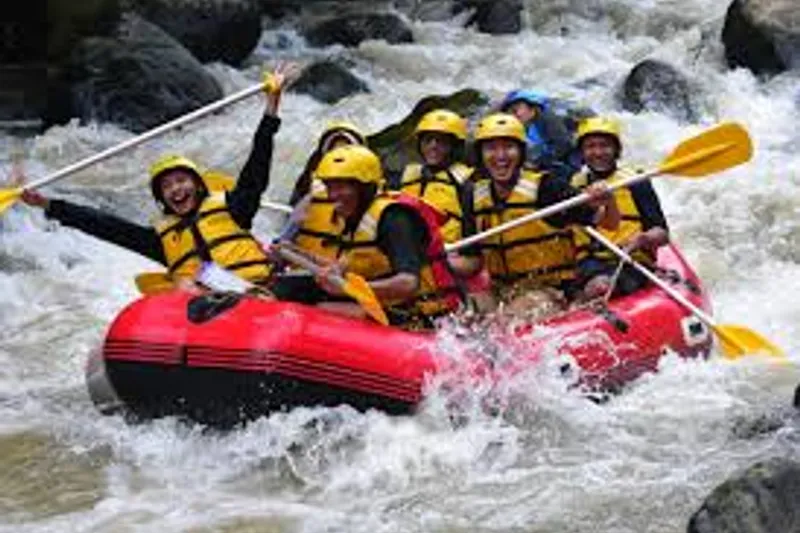
Rafting Lansia: Panduan Aman untuk Usia Dewasa Lanjut
Rafting lansia adalah kegiatan arung jeram yang tetap dapat diikuti oleh peserta usia dewasa lanjut selama rute yang dipilih memiliki tingkat kesulitan ringan.
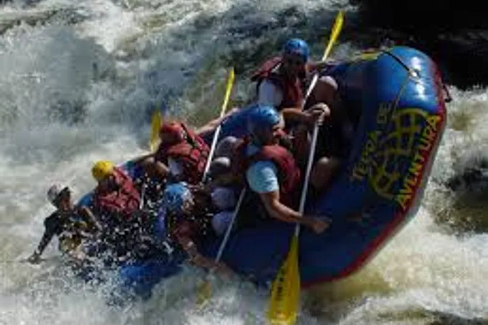
Rafting Anak: Syarat Usia dan Tips Keamanan Lengkap
Rafting anak adalah kegiatan arung jeram yang disesuaikan untuk peserta usia dini dengan syarat usia minimal tertentu dan tingkat kesulitan jeram yang ringan.
Rafting Keluarga: Level Kesulitan untuk Anak dan Lansia
Rafting keluarga adalah kegiatan arung jeram yang dirancang dengan tingkat kesulitan ringan hingga sedang agar dapat diikuti bersama oleh anak-anak, orang dewasa, dan lansia.
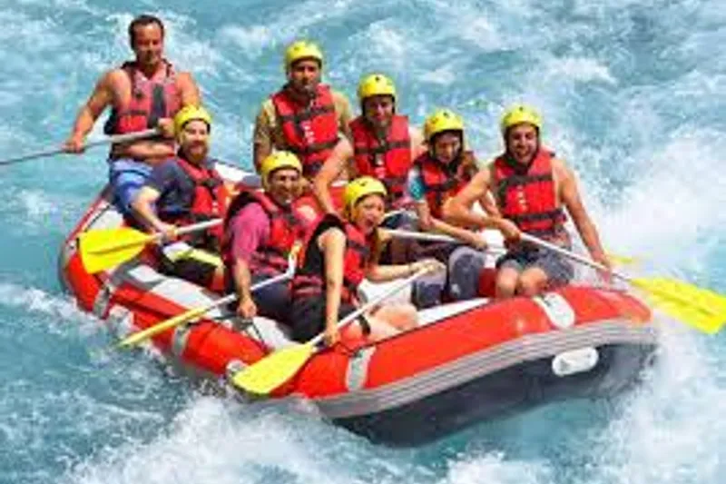
Estimasi Biaya Rafting Perusahaan untuk Corporate Gathering
Estimasi biaya rafting perusahaan untuk corporate gathering ditentukan oleh jumlah peserta, lokasi sungai, tingkat kesulitan rute, serta fasilitas tambahan yang dipilih.
Tips Memilih Vendor Team Building Sungai yang Aman
Memilih vendor team building sungai yang aman memerlukan pengecekan standar keselamatan, pengalaman memandu grup korporat, dan kejelasan paket.
Manfaat Rafting Tim untuk Kekompakan Karyawan
Rafting tim memberikan manfaat langsung bagi kekompakan karyawan karena mengharuskan setiap anggota berkoordinasi secara fisik dan verbal saat menghadapi arus sungai bersama-sama.
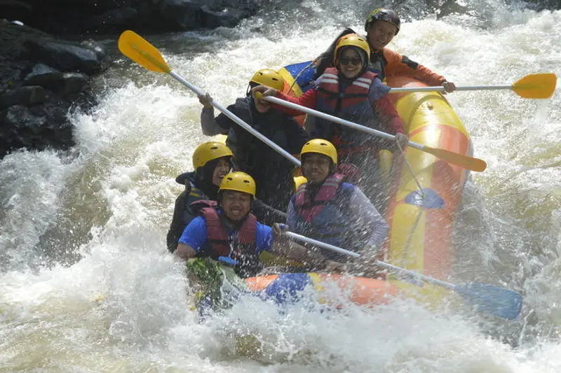
Rafting Perusahaan: Panduan Lengkap Team Building Sungai
Rafting perusahaan adalah kegiatan arung jeram yang dirancang khusus untuk corporate gathering dan team building sungai, bertujuan memperkuat kekompakan serta komunikasi antar karyawan lewat tantangan fisik terukur di alam terbuka.

Rute dan Estimasi Biaya ke Taman Bunga Batu
Rute menuju taman bunga Batu umumnya ditempuh melalui jalur darat dari Kota Malang, dengan estimasi biaya yang bervariasi tergantung moda transportasi dan titik keberangkatan.

Wisata Bunga Batu: Rekomendasi dan Tips Kunjungan
Wisata bunga Batu adalah pilihan destinasi keluarga di Kota Batu yang menawarkan pemandangan taman berwarna-warni, spot foto menarik, dan suasana udara sejuk dataran tinggi.

Taman Bunga Batu: Panduan Wisata dan Kalender Mekar
Taman bunga Batu adalah destinasi wisata alam di Kota Batu, Jawa Timur, yang menampilkan hamparan bunga warna warni sebagai daya tarik utama. Waktu terbaik berkunjung mengikuti musim bunga mekar Batu, umumnya pada peralihan musim kemarau ke penghujan.
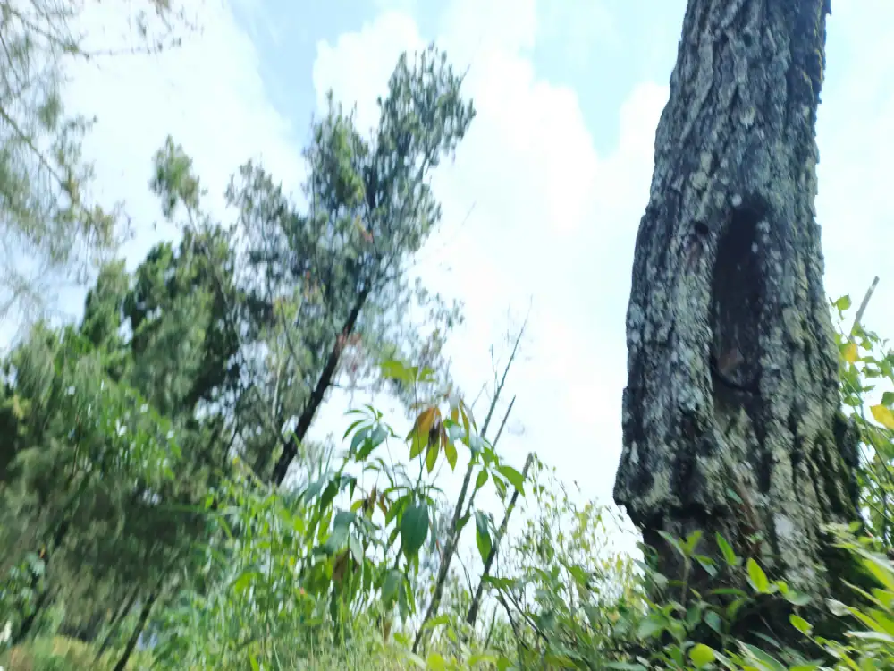
Musim Panen Strawberry Batu, Kapan Waktu Terbaiknya?
Musim panen strawberry Batu cenderung paling ideal saat musim kemarau, karena bunga stroberi mudah rusak dan busuk apabila terguyur hujan secara terus-menerus sebelum berkembang menjadi buah.

Musim Panen Jeruk Batu, Ini Waktu Terbaik Berkunjung
Musim panen jeruk Batu umumnya berlangsung antara September hingga Maret, dengan puncak panen paling melimpah terjadi sekitar Oktober hingga Desember setiap tahunnya.
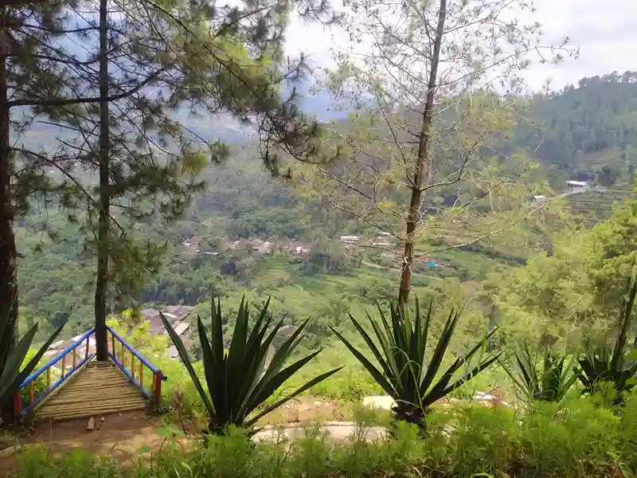
Musim Panen Apel Batu, Kapan Waktu Terbaiknya?
Musim panen apel Batu paling melimpah umumnya terjadi pada Januari hingga Maret serta Juli hingga Agustus, meski buah apel pada dasarnya dapat dipetik hampir sepanjang tahun di kawasan ini.

Kalender Musim Panen Batu: Strawberry, Apel, Jeruk
Kalender musim panen Batu menunjukkan apel umumnya melimpah pada Januari-Maret dan Juli-Agustus, strawberry berlimpah saat musim kemarau, dan jeruk pada Oktober-Desember.

Tips Persiapan Petik Strawberry di Batu untuk Wisatawan
Persiapan petik strawberry di Batu mencakup pemilihan waktu kunjungan, perlengkapan yang tepat, serta pemahaman aturan kebun agar pengalaman petik berjalan lancar.
_9_11zon.webp)
Kalender Panen Strawberry Batu Bulan per Bulan
Kalender panen strawberry Batu menggambarkan pola umum kualitas dan volume panen dari Januari hingga Desember, dengan periode terbaik pada musim kemarau.

Musim Strawberry Batu: Panduan Waktu Kunjungan
Musim strawberry Batu merujuk pada periode sepanjang tahun ketika tanaman strawberry di kawasan dataran tinggi Batu berbuah, dengan kualitas terbaik pada musim kemarau.

Petik Strawberry Batu: Kalender Musim Terbaik 2026
Petik strawberry Batu paling nyaman dilakukan saat musim kemarau, sekitar bulan April hingga September, karena buah lebih manis dan kebun tidak becek akibat hujan.

Musim Wisata Batu Malang Sepanjang Tahun, Ini Faktanya
Musim wisata Batu Malang cenderung lebih ramai pada periode libur nasional serta saat berlangsungnya event besar seperti festival budaya di bulan Juli dan Oktober.

Jadwal Event Batu 2026: Festival Wajib Dikunjungi
Jadwal event Batu 2026 mencakup festival budaya seperti Batu Art Flower Festival, Batu Culture Festival, serta agenda sport tourism seperti Panderman Gravity Park Downhill.
Kalender Wisata Batu: Cara Membaca Jadwal Event 2026
Kalender wisata Batu adalah daftar resmi agenda pariwisata Kota Batu yang disusun Dinas Pariwisata setiap tahun, mencakup event budaya, kuliner, dan olahraga wisata.

Kalender Event Wisata Batu 2026: Jadwal Lengkap Sepanjang Tahun
Kalender event Kota Batu 2026 berisi 30 agenda wisata resmi yang ditetapkan Dinas Pariwisata Kota Batu, dengan sejumlah festival unggulan tetap dipertahankan sepanjang tahun.

Kesalahan Umum Memilih Vendor Outbound Perusahaan
Kesalahan umum memilih vendor outbound perusahaan meliputi terlalu fokus pada harga murah, mengabaikan standar keselamatan, dan tidak memeriksa detail kontrak sebelum kegiatan berlangsung.

Biaya Outbound Perusahaan di Malang, Ini Faktornya
Biaya outbound perusahaan di Malang dipengaruhi oleh jumlah peserta, jenis fasilitas, durasi kegiatan, kualifikasi fasilitator, dan tingkat kompleksitas aktivitas yang dipilih.

Manfaat Outbound Perusahaan bagi Tim Kerja
Manfaat outbound perusahaan bagi tim kerja meliputi peningkatan komunikasi, kepercayaan antaranggota, kemampuan kepemimpinan, serta suasana kerja yang lebih segar setelah aktivitas di luar kantor.
Cara Memilih Vendor Outbound Perusahaan di Batu Malang
Memilih vendor outbound perusahaan di Batu Malang membutuhkan checklist procurement yang jelas, mulai dari legalitas usaha, portofolio klien korporat, standar keselamatan, hingga transparansi biaya.

Estimasi Biaya Trip Multi-Hari di Jawa Timur
Estimasi biaya trip multi-hari di Jawa Timur ditentukan oleh empat komponen utama, yaitu transportasi, akomodasi, tiket masuk destinasi, dan konsumsi selama perjalanan berlangsung.

Cara Menyusun Itinerary Trip Multi-Hari di Jatim
Menyusun itinerary trip multi-hari Jatim dilakukan dengan menentukan destinasi utama, mengurutkan rute berdasarkan arah geografis, lalu menyesuaikan waktu menginap dan transportasi.

Contoh Itinerary Trip Multi-Hari Jatim: Rute Malang-Bromo-Ijen
Itinerary trip multi-hari Jatim rute Malang-Bromo-Ijen adalah contoh susunan perjalanan empat hari yang menggabungkan wisata kota, alam pegunungan, dan kawah vulkanik.

Trip Multi-Hari Jatim: Kenapa Semakin Banyak Wisatawan Memilihnya
Trip multi-hari Jatim adalah pola perjalanan wisata di Jawa Timur yang berlangsung dua hari atau lebih, menggantikan pola kunjungan singkat satu hari.

Tips Bikin Video Cinematic Glamping Pakai HP untuk Reels dan TikTok
Ciptakan konten liburan kemping yang memukau hanya bermodalkan smartphone Anda. Pelajari teknik dasar pengambilan videonya.
Tips Memilih Outfit Kemping yang Estetik Namun Tetap Hangat di Batu Malang
Ingin tampil fashionable saat glamping di puncak Batu tanpa takut kedinginan? Ikuti panduan memilih pakaian layering estetik ini.
Menikmati Permadani Cahaya: Pesona City Lights Kota Batu dari Ketinggian Tenda
Temukan alasan mengapa panorama City Lights (cahaya kota) Batu dari atas bukit selalu memukau. Hadirkan nuansa estetik melihat gemerlap lautan malam dari dekat.

Bermain Sambil Belajar: Mengapa Alam Adalah Taman Bermain Terbaik Bagi Balita Era Digital
Sadarkah Anda seberapa sering balita Anda terpapar layar gawai? Temukan manfaat luar biasa alam sebagai taman bermain terbaik untuk melatih motorik anak di area Glamping Batu.

Ide Kencan Romantis: Mengapa Glamping di Batu Lebih Berkesan Momennya
Ciptakan kenangan bulan madu atau anniversary tak terlupakan. Temukan alasan dan tips mengapa kencan keromantisan di alam jadi solusi terbaik mendalami relasi.

Ritual Pagi Pegunungan: Memulai Hari dengan Energi Positif di Ketinggian Batu
Bangun pagi di alam pegunungan adalah pengalaman magis. Temukan ide "slow morning routine" terbaik di Batu Sunrise Camp untuk mereset energi Anda dari penatnya kota.

Tips Ampuh Melindungi Diri dari Gigitan Serangga Saat Kemping di Batu
Jangan biarkan serangga merusak istirahat Anda. Simak perlindungan paling efektif untuk mencegah gatal dan serangan agas kemah di tanah Batu perbukitan ini.

Tips Memilih Sepatu Hiking yang Tepat untuk Berkemah di Batu
Pastikan langkah Anda aman dan nyaman di medan pegunungan. Ketahui cara terbaik memilih alas kaki untuk kemping di Kota Batu.

Kemping di Masa Pensiun: Menikmati Usia Emas dengan Nyaman di Alam Terbuka Batu
Siapa bilang kemping hanya untuk anak muda? Temukan panduan dan tips lengkap menikmati masa pensiun liburan ramah lansia di area Batu Sunrise Camp.
Glamping vs Kemping Tradisional: Mana yang Cocok Untuk Liburan Anda?
Bimbang memilih antara Glamping yang mewah dan Kemping Tradisional yang otentik? Temukan kelebihan, kekurangan, dan gaya liburan alam yang paling pas untuk Anda.

Panduan Fotografi Milky Way Saat Kemping: Cara Mengabadikan Galaksi dari Batu Sunrise Camp
Pelajari teknik dasar dan setting kamera untuk memotret Bima Sakti. Lengkap dengan tabel peralatan, tips komposisi, dan panduan editing di Lightroom.

Panduan Hiking Pemula di Batu Malang: Mulai dari Nol hingga Puncak Bersama Komunitas
Panduan lengkap hiking perdana di Batu Malang: jalur trekking terbaik, persiapan fisik, checklist perlengkapan wajib, hingga tips menikmati sunrise di puncak.

Outbound Team Building Seru di Batu Sunrise Camp: Solusi Terbaik Gathering Kantor yang Berkesan
Alam pegunungan Batu menjadi latar terbaik mempererat kekompakan tim. Temukan pilihan aktivitas outbound, fasilitas korporat, dan manfaat nyata bagi tim Anda.

Seni Memasak Bersama Keluarga di Alam: Aktivitas Bonding Paling Berkesan di Batu Sunrise Camp
Temukan mengapa memasak bersama di alam terbuka adalah aktivitas bonding terbaik. Dilengkapi resep simpel, tips aman, dan momen makan malam di bawah bintang.
Ulang Tahun Edukatif: Rayakan Pertambahan Usia Buah Hati dengan Konsep Glamping Alam
Bosan perayaan ulang tahun di restoran biasa? Coba konsep pesta tematik alam terbuka lengkap treasure hunt, potong kue, dan menginap glamping mewah di Batu.
Lepaskan Diri dari Gawai: Panduan Digital Detox Sempurna di Batu Sunrise Camp
Saatnya puasa notifikasi. Bebaskan pikiran Anda dengan paket relaksasi dari jeratan gawai elektronik dan rasakan kesunyian hakiki membaca buku di rimbunnya pinus.

Syahdunya Glamping di Musim Hujan: Menikmati Alam Batu Tanpa Takut Kebasahan
Jangan biarkan musim hujan membatalkan rencana liburan Anda. Rasakan pengalaman syahdu menikmati glamping mewah hangat dan kedap air di Batu Sunrise Camp.

Healing Maksimal: Relaksasi Yoga Pagi Berlatar Pegunungan di Batu Sunrise Camp
Kembalikan ketenangan dan kesegaran batin Anda melalui rutinitas stretching subuh bersama panorama sejuk pegunungan di depan glamping Anda.

Destinasi Pet-Friendly Terbaik: Serunya Mengajak Anabul Kemping di Batu Sunrise Camp
Tidak perlu meninggalkan anabul di pet shop! Nikmati glamping mewah dan seru bersama dengan anjing atau kucing kesayangan di Batu Sunrise Camp.

Pengalaman Glamping Romantis di Batu Sunrise Camp: Cara Baru Rayakan Momen Spesial
Rayakan hari jadi Anda bersama pasangan di Batu Sunrise Camp. Glamping mewah dengan view city light dan gemerlap bintang malam menunggu Anda.

Panduan Seru Barbeque Malam Kamp di Batu Sunrise Camp: Hangatkan Suasana Keluarga
Menikmati malam di Batu Sunrise Camp tidak lengkap tanpa barbeque. Simak panduan dan tips seru BBQ bersama keluarga ditemani city light Malang.

Fasilitas 'Kantor Alam' di Batu Sunrise Camp: Solusi Ampuh Buat Kamu yang Burnout Kerja!
Membayangkan menyeruput kopi hangat memandang pohon pinus, sementara pekerjaan terpantau lewat WiFi kencang, bukanlah sebuah dosa besar.
Capek Kerja Bagai Kuda? Intip Fasilitas 'Kantor Alam' di Batu Sunrise Camp!
Jangan sampai Anda mencapai titik burnout total. Nikmati work-life balance dari tenda mewah dengan view gunung, fasilitas air hangat, dan WiFi kencang.
Kerjaan Numpuk Bikin Burnout? Saatnya Self-Healing di Batu Sunrise Camp!
Jangan tunggu sampai benar-benar tumbang gara-gara burnout. Segera rencanakan liburan self-healing tanpa ribet dengan fasilitas glamping premium di Batu Sunrise Camp sebelum kehabisan spot.

Nikmati Sensasi Camp Mewah di Batu Sunrise Camp Sebelum Slotnya Full!
Menunda momen istirahat berkualitas bersama keluarga atau pasangan hanya akan membuat rasa lelah makin menumpuk. Booking sekarang!

Panduan Memilih Matras Kemping Agar Punggung Tidak Nyeri Saat Bangun
Sleeping Bag mahal tak akan berguna tanpa pondasi alas matras yang baik. Ini rahasia mendapatkan kasur busa setara penginapan di dalam tenda Anda.
Tips Membawa Bekal Sayuran Segar Saat Kemping Tanpa Kulkas
Tak selamanya menu kemping hanya mie instan dan sosis. Ketahui trik rahasia menyimpan seledri dan sawi awet segar di alam bebas Gunung Batu.

Cara Praktis Mencegah Tenda Tergenang Air Hujan di Gunung Batu
Jangan biarkan liburan alam Anda berubah menjadi wahana kolam renang berlumpur. Teknik parit dan setel flysheet rahasia ada di artikel ini.
Rekomendasi Lampu Penerangan Tenda Anti Silau untuk Tidur Nyenyak
Cahaya putih terang LED justru merusak hormon tidur Anda di alam bebas. Kenali jenis pijar lentera kuno yang membiusnya.

Panduan Lengkap Meracik Kotak P3K Darurat Kemping di Hutan Pinus Batu
Luka gores ranting dan masuk angin adalah musuh utama pekemah. Ketahui 7 obat anti repot yang sangat diandalkan nyawa kemah Anda.

Rekomendasi Camilan Malam Penghangat Tubuh di Samping Api Unggun
Simak resep kudapan dan minuman luar ruangan asyik yang tidak hanya mengenyangkan lambung, melainkan menaikkan suhu tubuh Anda belasan persen.

Cara Memilih Sleeping Bag Tepat untuk Suhu Udara Malam di Gunung Batu
Tidur pulas di alam terbuka sangat bergantung pada sleeping bag yang membalut Anda. Pahami ragam bahan insulasi pelindung hawa anjlok ini.

Tips Menjaga Baterai Kamera dan HP Agar Awet Saat Kemping di Cuaca Dingin
Suhu nol derajat pegunungan Batu menyedot energi Lithium-Ion dalam hitungan jam. Pelajari metode ekstrem menjaga daya elektronik Anda.

Manfaat Meditasi Alam di Pegunungan Batu untuk Hilangkan Stres Kerja
Rasakan manfaat selebrasi ketenangan sejati. Pelajari panduan meditasi kesadaran singkat berlatar belakang udara sejuk.

Cara Meracik Kopi Pegunungan yang Nikmat Saat Suhu Turun di Batu
Perkaya ritual kemping dengan racikan kopi kental buatan tangan. Kenali perlengkapan portabel tanpa beban berlebih.

Cara Efektif Mengatasi Kejenuhan Anak Saat Kemping di Batu
Ketahui strategi jitu agar anak asyik dan tidak bosan selama mengikuti liburan kemping keluarga di kawasan pegunungan.

Panduan Memilih Pakaian Kemping Tepat Saat Musim Hujan di Batu
Jangan biarkan terjangan hujan menghentikan hobi kemping Anda. Kuasai sistem pakaian anti air tiga lapis wajib ini.

Panduan Lengkap Solo Camping Aman dan Nyaman di Batu Malang
Rancangan keberanian wisata mandiri pencarian jati diri yang sepenuhnya terjalin dengan persiapan protokol aman liar.

Cara Ampuh Mengatasi Udara Dingin Saat Kemping di Pegunungan Batu
Jangan sampai suhu jatuh merusak liburan, bekali diri dengan pemahaman teknik 3 layer perlindungan suhu badan.
Rahasia Mendapatkan Foto Sunrise Terbaik Saat Kemping di Batu Malang
Panduan teknis bagi pemula untuk menembak momen golden hour fajar di dataran tinggi.

Mengapa Api Unggun Wajib Ada Saat Event Kemping Keluarga di Batu?
Temukan rahasia kelenturan psikologis di balik teater alam di tengah kemping keluarga Anda.
Tips Tepat Mendirikan Tenda Kemping yang Kokoh Hadapi Angin Pegunungan Batu
Panduan teknis dan dasar keselamatan menggunakan tali pancang agar tenda Anda kuat semalaman.

7 Ide Permainan Outbound Seru Saat Kemping Rombongan & Keluarga
Kegiatan peretas kecanggungan (ice breaking) penambah gelak tawa interaktif saat event lapangan luas.
Keseruan Tak Terlupakan: Paket Berkemah Makrab Siswa Bisnis Digital di Batu Sunrise Camp
Experiential learning, outbound, view city light, dan sunrise magis untuk Makrab mahasiswa Bisnis Digital.

Cari Ground Luas? Pilihan Paket Camping Batu Sunrise Camp Malang
Solusi event rombongan besar dan outbound dengan area lapang, instruktur berpengalaman, dan view memukau.
Tips Kemping Aman & Nyaman di Musim Hujan
Mempersiapkan tenda anti badai dan perlengkapan hangat agar tetap estetik dan elegan.
5 Manfaat Rahasia Liburan Kemping Bersama Keluarga
Mengurangi screen-time anak sedari dini dan membangun ikatan keluarga lewat alam bebas.

Rekomendasi Menu Santap Alam Praktis & Lezat
Tinggalkan indomie sejenak, ini cara memasak daging grill ala glamping sultan yang simpel.

Checklist Lengkap Peralatan Kemping Pemula
Jangan sampai kedinginan atau kelaparan. Ini standar bawaan yang wajib jika kemping mandiri.
Prinsip 'Leave No Trace': Kemping Tanpa Jejak
Panduan pelestarian alam bagi pecinta kemping agar surga dunia kita tetap terjaga.
Panduan Memilih Lokasi Kemping Terbaik di Batu Malang
Jangan asal pilih spot! Pelajari kriteria lokasi ideal agar pengalaman kemping Anda sempurna dan aman.
7 Aktivitas Seru yang Wajib Dilakukan Saat Kemping di Batu
Dari hiking sore, api unggun, hingga memasak bersama di udara segar pegunungan Batu Malang.
Tips Kemping Bersama Anak: Petualangan Aman & Menyenangkan
Investasi kenangan terbaik untuk si kecil. Panduan lengkap agar kemping keluarga berjalan sempurna.

Panduan Stargazing: Menikmati Langit Malam Saat Kemping di Batu
Langit malam Batu Malang adalah salah satu terbersih di Jawa Timur. Pelajari cara menikmatinya secara maksimal.
Dapatkan Update Tips Kemping Eksklusif
Jadilah yang pertama tahu tentang spot kemping baru dan promo paket bulanan kami. Hubungi kami untuk bergabung dalam komunitas pecinta alam Wisata Kemping Batu.
Hubungi via WhatsApp